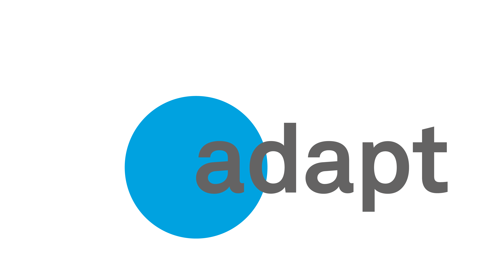

| Adapt 0.8.2 |
|---|
| Date : 29/08/17 |
| Adapt 0.7.4 |
| Date : 24/08/17 |
| Adapt 0.7.3 |
| Date : 23/08/17 |
| Adapt 0.7.2 |
| Date : 22/08/17 |
| Adapt 0.7.1 |
| Date : 21/08/17 |
| Adapt 0.6.5 |
| Date : 18/08/17 |
| Adapt 0.6.4 |
| Date : 17/08/17 |
| Adapt 0.5.5 |
| Date : 11/08/17 |
| Adapt 0.5.4 |
| Date : 10/08/17 |
| Adapt 0.5.3 |
| Date : 09/08/17 |
| Adapt 0.5.2 |
| Date : 08/08/17 |
| Adapt 0.5.1 |
| Date : 07/08/17 |
| Adapt 0.4.5 |
| Date : 04/08/17 |
| Adapt 0.4.4 |
| Date : 03/08/17 |
| Adapt 0.4.3 |
| Date : 02/08/17 |
| Adapt 0.4.2 |
| Date : 01/08/17 |
| Adapt 0.4.1 |
| Date : 31/07/17 |
| Adapt 0.3.5 |
| Date : 28/07/17 |
| Adapt 0.3.4 |
| Date : 27/07/17 |
| Adapt 0.4.2 |
| Date : 01/08/17 |
| Adapt 0.4.1 |
| Date : 31/07/17 |
| Adapt 0.3.5 |
| Date : 28/07/17 |
| Adapt 0.3.4 |
| Date : 27/07/17 |
| Adapt 0.3.3 |
| Date : 26/07/17 |
| Adapt 0.3.2 |
| Date : 25/07/17 |
| Adapt 0.3.1 |
| Date : 24/07/17 |
|
|
| Adapt 0.2.5 |
| Date : 21/07/17 |
| Adapt 0.2.4 |
| Date : 20/07/17 |
| Adapt 0.2.3 |
| Date : 19/07/17 |
| Adapt 0.2.2 |
| Date : 18/07/17 |
| Adapt 0.2.1 |
| Date : 17/07/17 |
| Adapt 0.1.2 |
| Date : 14/07/17 |
| Adapt 0.1.1 |
| Date : 13/07/17 |
|
|
|
|